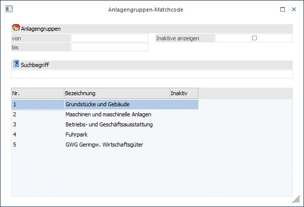

Durch Drücken der F9-Taste oder Anklicken des Lupen-Symbols wird der Matchcode gestartet. Der Suchbegriff kann im gleichnamigen Feld eingegeben werden, wobei sowohl die Gruppennummer, als auch die Gruppenbezeichnung (oder ein Teil davon) herangezogen werden kann.
Mit dem Kennzeichen "Inaktive anzeigen" kann gesteuert werden, ob inaktive Anlagengruppen bei der Suche eine Rolle spielen oder nicht.
Die Suche nach vorhandenen Anlagengruppen wird durch Drücken der F5-Taste ausgelöst.
In der Tabelle werden alle gefundenen Einträge angezeigt.
Der gewünschte Datensatz kann mit der RETURN-Taste einfach in die Eingabemaske übernommen werden.
Buttons
Ø OK
Bestätigen Sie die Eingabe Ihres Suchbegriffes durch Ok, Drücken der Enter-Taste oder mit F5.
Ø Ende
Beenden Sie ihre Suche nach einer Anlagengruppe. Das Fenster schließt sich. Natürlich können Sie das Fenster auch über die ESC-Taste schließen.
Ø Neuanlage
Durch Anklicken kann eine Anlagengruppe angelegt werden, wobei man automatisch in das entsprechende Stammdatenfenster gelangt.
Ø Editieren
Durch Anklicken kann die Anlagengruppe, die in der Matchcode-Tabelle aktiviert wurde, editiert werden.

Ø FORM Datenanlage
Die "FORM Datenanlage" bietet die Möglichkeit Datensätze in der WinLine vorzuhalten und bei Bedarf in die WinLine Stammdaten zu übernehmen (nähere Informationen entnehmen Sie bitte dem Kapitel "FORM Datenanlage").
Ø Anlage importieren
Mit Hilfe dieses Buttons können Anlagen schnell und effizient aus externen Quellen übernommen werden (weitere Informationen entnehmen Sie bitte dem Kapitel "Stammdaten importieren").